우도
우도에 도착하자마자 탁 트인 바다와 푸른 하늘, 그리고 섬 전체를 감싸는 나무와 풀들이 정말 아름다웠어요.
특히, 우도의 해변은 깨끗하고 물이 맑아 바다를 즐기기에 좋았고, 해변가를 따라 산책하면서 자연의 아름다움을 만끽할 수 있었어요
우도에서는 다양한 액티비티를 즐길 수 있었어요. 자전거를 대여해 섬을 한 바퀴 도는 것도 재미있었고, 해변에서 서핑하며 우도를 느낄 수 있는 기회가 되어 좋았어요.
'한라산 볶음밥'이 유명하다고 해서 먹어보았는데, 입맛이 딱 맞았고 정말 한라산처럼 볶음밥을 쌓아올려서 만들어놓았어서 귀여웠어요.
우도의 평화로운 분위기는 저에게 너무너무 소중하게 다가왔고 다음에 제주도를 방문할 때 꼭 다시 와야겠다고 생각했어요.
[ PHOTOS 📸 ]
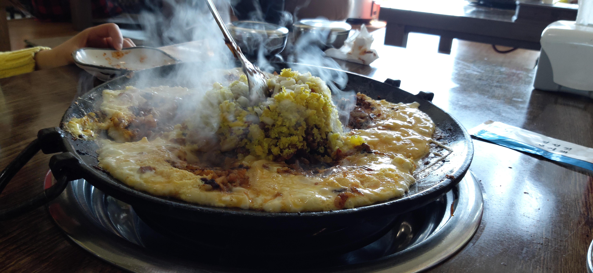
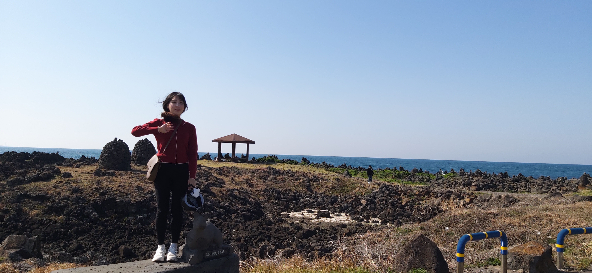


[ 끝🥰 ]
서핑 첫 도전
제주도에서 처음으로 서핑에 도전했어요.
제주도는 서핑에 최적화된 멋진 해변과 좋은 파도가 많아서, 서핑 입문자로서 도전하기에 최적화된 장소였던 것 같아요.
핑을 처음 시작하기 전에 서핑 레슨을 받았어요. 초보자에게는 안전과 기본 기술을 배우는 것이 가장 중요하다고 하셔서, 기본적인 파도 타는 방법과 균형 잡기, 파도에 맞서기 등을 배웠어요.
선생님들이 매우 친절하고 이해하기 쉽게 설명해 주셔서, 걱정이 조금 사라졌어요.
장비를 착용하고 바다에 들어가기 전에 미리 해변에서 연습해보았는데, 그러면서 힘의 80퍼센트 정도를 다 쓴 것 같았어요.
바다에 들어가서 실제로 서핑을 해보니, 예상보다 훨씬 어려웠어요.
처음에는 자꾸 넘어지고 물속에서 허우적거렸지만, 점점 감을 잡아가는 기분이었어요.
파도에 올라서서 서는 순간, 바람과 물속의 시원한 느낌이 너무 좋았고, 그야말로 서핑의 매력을 실감할 수 있었어요.
[ PHOTOS 📸 ]


[ 끝🥰 ]
주상 절리대
천연의 기암괴석들이 어우러져 형성된 절경으로, 자연이 만들어낸 예술 작품이라고 불리는 주상 절리대에 다녀왔어요.
상 절리대에 도착하자마자, 거대한 기둥처럼 쌓인 화산암의 절경이 눈앞에 펼쳐졌어요.
절벽 위에서 바다를 바라보는 전망은 압도적이었고, 넓은 바다와 하늘, 그리고 절벽의 조화가 만들어낸 경치는 마치 자연의 거대한 걸작처럼 느껴졌어요.
바다와 바람, 그리고 오랜 시간 동안의 자연적 과정이 만들어낸 결과물이라니, 자연의 힘과 시간의 흐름을 몸소 느낄 수 있었어요.
단순히 아름다운 경관을 넘어서, 자연의 위대함과 그 과정의 경이로움을 실감하게 해주는 장소였어요.
[ PHOTOS 📸 ]

 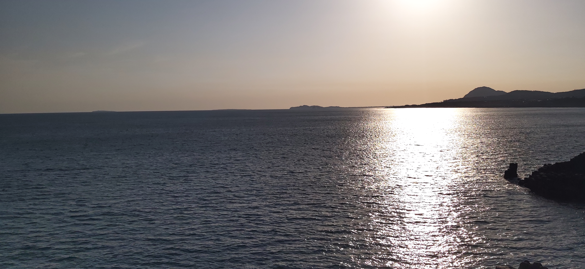
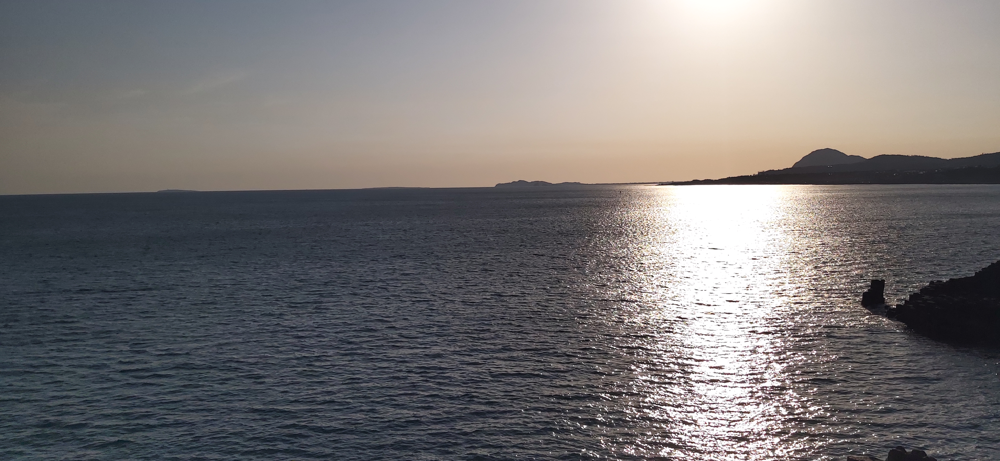
[ 끝🥰 ]
한라산 정상 백록담
한라산 정상을 목표로 한 하이킹은 정말 도전적이었지만, 그만큼 보람 있는 경험이었어요.
출발점에서부터 시작된 길은 점점 경사가 가팔라지고, 고도가 올라갈수록 더 힘들었지만 참고 걷는 내내 경치가 바뀌면서, 주변 자연의 아름다움을 감상할 수 있는 기회가 많았어요.
한라산 정상에 도착해 백록담을 마주했을 때 눈에 보이는 광경이 믿기 힘들었어요.
한라산 정상에 위치한 화산 분화구 호수인 만큼 신비하면서 청정한 모습이었어요.
정상에서 내려다보는 전체 풍경과 함께 백록담의 풍경을 보는 것은 정말 특별한 경험이었어요.
힘든 과정이 있었지만 그 모든 것이 한라산의 자연과 백록담의 아름다움을 만끽하는 순간을 위해서였다는 생각이 들었어요.
[ PHOTOS 📸 ]


[ 끝🥰 ]
서우봉
한라산의 주요 봉우리 중 하나로, 비교적 낮은 고도에서 제주도의 광활한 풍경을 감상할 수 있는 서우봉에 다녀왔어요.
서우봉은 제주도의 아름다운 자연을 한눈에 담을 수 있는 멋진 장소였어요.
특히 한라산의 웅장한 모습과 제주도의 바다, 그리고 넓은 초원과 들판이 조화를 이루는 장면이 인상적이었어요.
제주도의 드넓은 바다와 푸른 하늘, 그리고 주변의 푸르른 식물들이 어우러져 아름다운 파노라마를 형성했어요.
산책로를 따라 걷다 보면 제주도의 다양한 식물과 자연을 가까이에서 관찰할 수 있고, 때로는 소소한 동물들도 만날 수 있었어요.
낮은 고도에서도 이렇게 멋진 풍경을 감상할 수 있다는 것이 참 좋았고, 제주도의 아름다움을 다시 한 번 느낄 수 있었어요.
[ PHOTOS 📸 ]


[ 끝🥰 ]
소길리 마을
제주도의 한적하고 평화로운 지역인 소길리 마을에 다녀왔어요.
소길리에는 "음악이 있는 정류장"이 있는데, 피아노를 칠 수 있게 악기가 준비되어 있어요.
소길리 마을의 아름다운 자연 환경은 피아노 연주에 완벽한 배경을 제공했어요.
주변의 푸른 들판과 제주도의 고요하고 평화로운 풍경 속에서 피아노를 연주하는 것은 정말 특별한 경험이었어요.
단순한 음악적 경험을 넘어서, 소길리 마을을 느낄 수 있는 특별한 시간이었어요.
평화롭고 아름다운 환경 속에서 연주한 피아노 소리는 제 마음에 깊이 남았고, 자연과 음악이 함께 어우러지는 순간을 경험할 수 있어 정말 행복했어요.
[ PHOTOS 📸 ]


[ 끝🥰 ]
김녕 해수욕장
깨끗하고 넓은 백사장과 맑은 바다가 매력적인 김녕 해수욕장에 다녀왔어요.
탁 트인 바다와 푸른 하늘이 맞닿아 있는 경치가 인상적이었어요.
해변을 따라 펼쳐진 백사장은 부드럽고 깨끗해서 걷기 편했고, 바다의 파도가 잔잔하게 밀려오는 소리가 정말 평화로웠어요.
해변과 바다의 조화가 주는 여유로운 분위기 덕분에 마음이 편안해졌
해변을 따라 길게 펼쳐진 산책로가 바다의 경치를 감상하며 여유롭게 걸을 수 있게 해주었고, 도중에 잠시 멈춰서 바다를 바라보거나 사진을 찍기도 좋았어요.
자연 풍경을 즐기며 걸으면서 하루의 스트레스가 풀리는 듯한 기분이었어요.
특히, 바닷바람이 시원하게 불어와 산책하는 동안 상쾌한 기분을 느낄 수 있었고 김녕 해수욕장에서의 산책은 정말 힐링이 되는 시간이었어요.
[ PHOTOS 📸 ]
 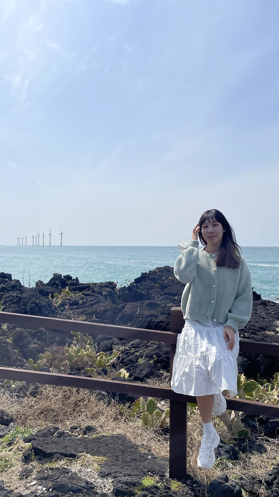
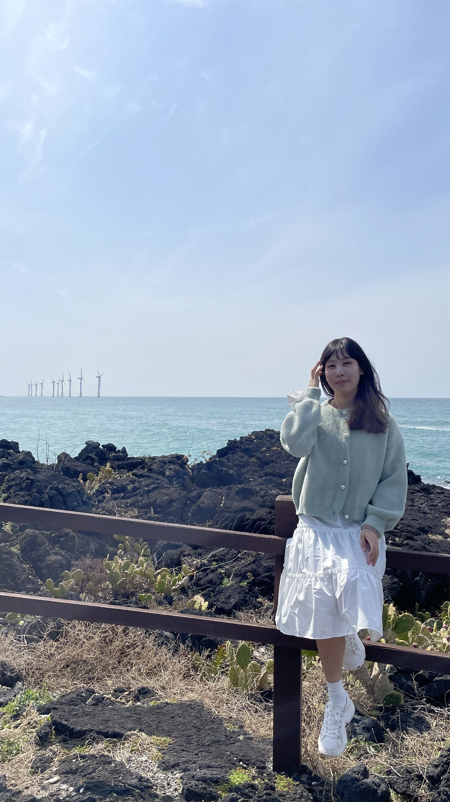
 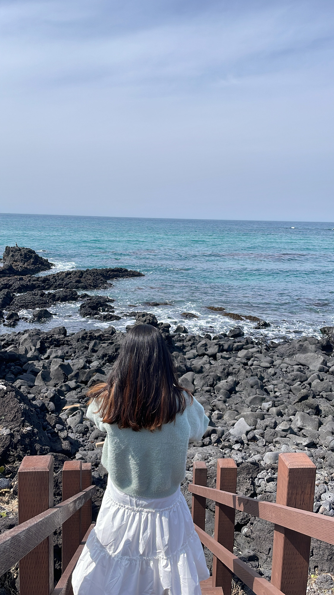
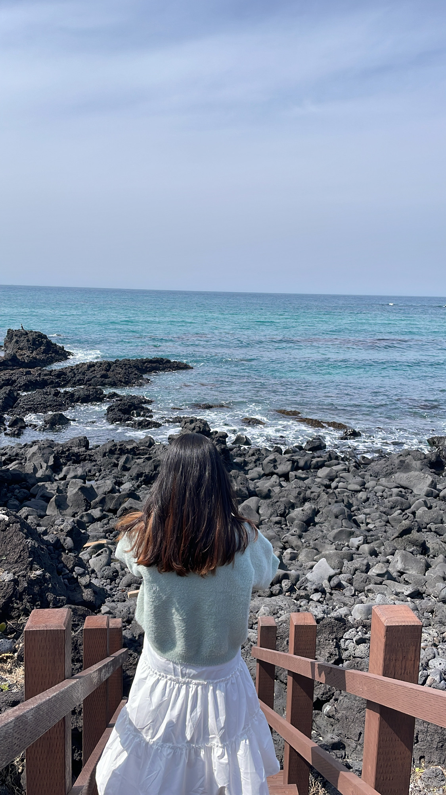
 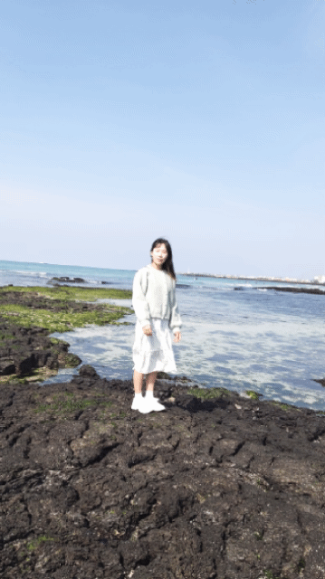
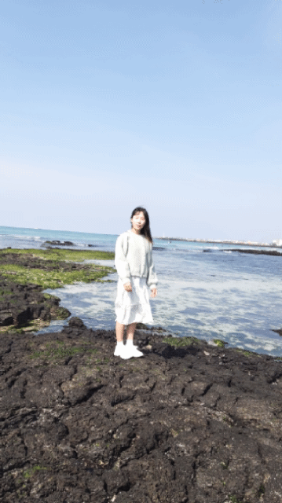
 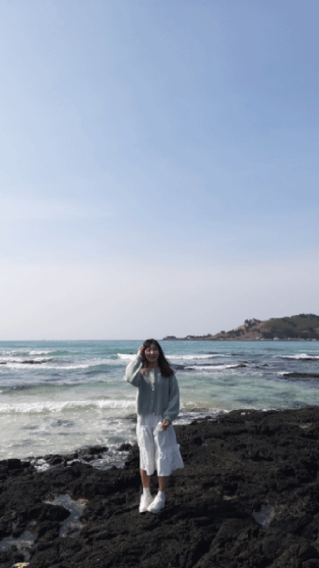
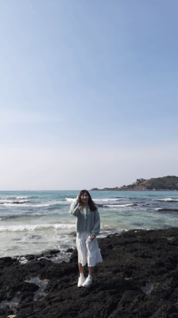
[ 끝🥰 ]
도치돌 알파카 목장
알파카들과 교감하며 먹이를 줄 수 있는 도치돌 알파카 목장에 다녀왔어요.
알파카들에게 먹이를 주면서 그들이 천천히 다가와서 손에서 먹이를 받아먹는 모습은 정말 귀여웠어요.
목장이라 그런지 냄새가 좀 났지만, 알파카들이 너무 사랑스러운 동물이라, 가까이에서 그들과 교감할 수 있는 것 자체가 즐거운 경험이었어요.
[ PHOTOS 📸 ]


[ 끝🥰 ]
금오름 오르기
제주도의 오름 중 하나로, 비교적 접근성이 좋은 금악오름에 다녀왔어요.
산행을 시작할 때, 푸른 숲과 함께하는 경쾌한 기분으로 출발했어요. 길이 편안하게 이어져 있어 산행 초반부터 큰 부담 없이 즐길 수 있었어요.
조금씩 오르면서 점점 시야가 넓어지는 것을 느끼며, 자연 속에서의 여유를 만끽할 수 있었어요.
정상에서의 전망은 그동안의 등산 노력을 보상해주는 순간이었어요. 등산로의 다양한 풍경이 산행의 피로를 잊게 해주었어요.
금악오름에서의 산행은 자연과의 조화로운 만남과 아름다운 경치를 경험할 수 있는 멋진 시간이었어요.
[ PHOTOS 📸 ]
[ 끝🥰 ]